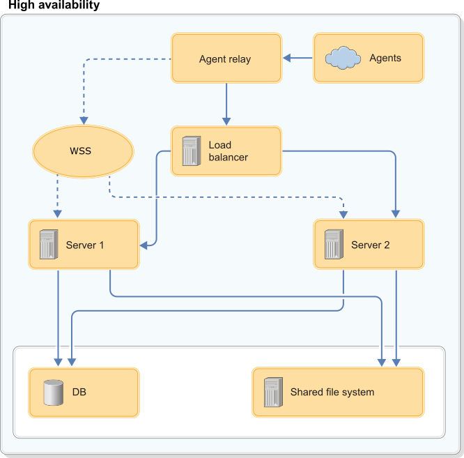

High availability overview
To configure clustered high availability for IBM DevOps Deploy (Deploy), you must use a load balancer. You can configure a cold standby server by using a load balancer or configuring the servers' DNS.

The load balancer communicates with all Deploy servers. All servers access the same database, shared file system, and agents.
Two common high-availability scenarios are clustered and cold-standby (disaster recovery), and you can apply both scenarios to configurations that use the Deploy server.
Cold Standby
The cold standby option is simple to implement and reduces downtime. In this setup, the load balancer manages two servers, or two servers are connected through DNS settings. Both the primary and secondary servers are connected to a database and a remote file system. The secondary server is not running. If the active node fails, you must start the secondary server so network traffic can be routed to it. This event is called failover. During failover, the secondary server reestablishes connections with all agents, runs recovery, and proceeds with any queued processes. Deploy has no automatic process for failover, but it can be managed by using your load balancer or DNS.
Clustered
The high availability (HA) feature increases server reliability by distributing processing across a cluster of servers. Each server is an independent node that cooperates in common processing. The goal is to create a fault-tolerant system that requires little or no manual intervention. All servers are running, and the load balancer routes processes to all servers, based on their availability.
All servers recognize each other, and all services are active on each server.
For installation instructions, see Setting up high-availability clusters.